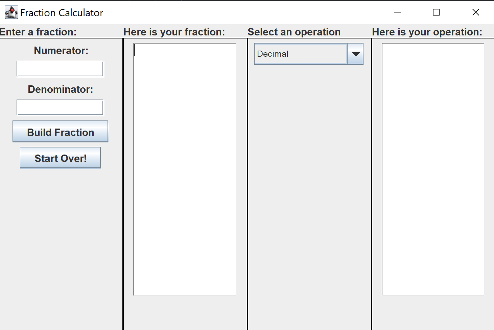

Languages: c++.20
benchP is a cpp header file for program testing utilties. You can use it to compare program outputs and times! benchP directly contacts the Windows kernel to run your program. This means we do not use the resources created for powershell to run your program. Additionally, all reading and writing is performed before and after your program is executed to give an accurate measurement of your execution time without I/O delay.
Languages: java.22.0.2
Given a csv data sheet in my first semester Fanshawe Math1202 course, I decided to try to graph relationships in the data! Exam Analysis project is made up of three java files and it parses the exams.csv file for charting. ExamData.java holds a class that stores records from exams.csv as objects. ExamDataHelper.java takes a look at the java UI and also imports JFreeChart to quickly and simply draw the charts as panels.
Languages: java.22.0.2
Advent of Code is a Advent Calendar of Holiday themed questions. Mull It Over is the third question of Advent of Code 2024. You are given a puzzle and must filter all the multiplication instructions then sum them for a final answer. The second puzzle for day three involves a On/Off Toggle to sum the multiplication instruction.
Languages: java.22.0.2
This program accepts integers for the numerator and denominator of a fraction. It uses a custom Fraction object for comparison and arithmetic of other fractions. The program is build with a UI and will throw exceptions for illegal operations.
Languages: c++.20
Polynomial is a cpp class that abstracts a std::map to store expressions. The keys are used to store the terms degree, while the values holds the terms coefficient. When creating an expression, you must create one term at a time, but it automatically adds terms of the same degree. Basic arithmetic operations of +, -, * are implemented. The class has a ostream operator and a to string method.